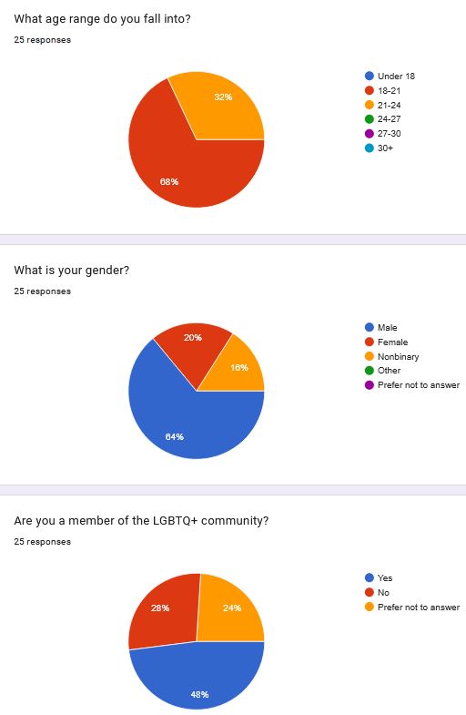

Survey Findings
An overwhelming amount of people responded by saying that the characters were one of the biggest appeals of the series, with all but one making this claim. However, when asked if the characters were well-written, answers were a bit more mixed.
Limitations
Sample size & Limited perspectives
Like most people my age, I find myself in only spaces discussing media that I quite enjoy. I shared the link to this survey in a Discord server, and encouraged people to share it with anyone else who might be interested. The survey concluded with 25 total responses, with a few common trends among the people who responded to it. There's still a decent amount of diversity, though it is worth noting, especially since the majority of respones were from males.
